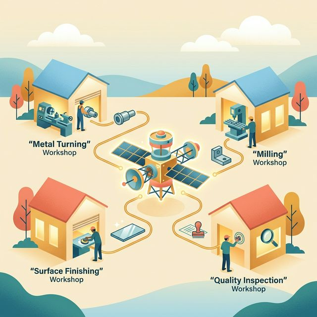

The Supply Chain That Doesn’t Know It Exists
Walk the industrial parks of Ontario’s Golden Horseshoe and you will find something remarkable: an archipelago of small manufacturers — dozens of them within an hour’s drive of each other — whose capabilities, taken together, amount to a complete aerospace precision manufacturing supply chain.
A titanium turning specialist in Hamilton. A five-axis milling house in Cambridge. A precision anodizing shop in Burlington — one of only a handful in Canada certified to AMS 2469 for aerospace chromic acid anodize. An NDT lab in Oakville, accredited to NADCAP for both fluorescent penetrant inspection and X-ray radiography.
Each of these operations is excellent at what it does. Each has accumulated decades of process knowledge, has fought through the expensive gauntlet of aerospace customer approvals and quality system certifications, and has won the respect — if not the volumes — of the Tier-1 primes it serves. Each is, in the language of industrial economics, a specialist firm operating at the frontier of its domain.
They have never built a part together.
They exist in the same regional ecosystem, serve many of the same customers, and face many of the same bottlenecks. They bump into each other occasionally at CME events or the Aerospace Industries Association of Canada Ontario chapter meetings. They have exchanged business cards. None of them has the others’ current capacity availability, current certification status, or current pricing. None of them knows, on any given Tuesday, whether the Cambridge mill has time for a six-week titanium program, or whether the Oakville NDT lab is booked through the quarter.
The market that should connect them does not exist. And the opportunity that should flow from their combined capability disappears — project by project, month by month — into the notebooks of Tier-1 procurement officers who cannot assemble a complete domestic supply chain fast enough to use it.
This is a story about what changes when they can find each other. The people you are about to meet are fictional. The manufacturing capabilities, certifications, geographic relationships, and market forces that drive their story are not.
Act One — Four Shops, One Problem
Reza’s Turning Shop
Reza Tabatabaei has been running Precision Turn Hamilton for nineteen years. The shop is on a quiet industrial street in the east end of Hamilton, between a stamping plant and a commercial laundry. From the outside, it looks like nothing: a low beige brick building, a modest sign, a parking lot with half a dozen cars. Inside, it is immaculate. Six CNC turning centres — four Mazak QUICK TURN Nexus models and two INDEX G200 Swiss-type machines — stand in a climate-controlled row, each humming at a precision that would be invisible to anyone who didn’t spend their career learning to read a surface finish gauge.
Reza’s specialty is turned components in difficult materials: titanium alloy (Ti-6Al-4V), Inconel 718, and austenitic stainless steels. His shop is CWB-certified, ISO 9001 registered, and approved on the vendor lists of three Tier-1 aerospace primes. His best customers are landing gear component programs and airframe bracket programs — parts that get machined, finished, inspected, assembled into sub-assemblies, and fly.
Right now, Reza has a problem that has been quietly costing him money for eight months.
His two Swiss-type INDEX machines — the workhorses for small, complex turned parts — are running at 60% utilization. The program that used to fill them, a helicopter rotor head pin program for a Quebec prime, went on hold when funding for the platform was restructured. The pins are still needed; the program is still alive; but the delivery schedule has slipped eighteen months. The machines are ready. The tooling is set up. Reza’s best operator, a Brazilian-Canadian machinist named Cláudio, has nothing to run on Thursday afternoons.
Reza knows, intellectually, that somewhere in Ontario there are aerospace manufacturers who need precision turning on small titanium components. He does not know who they are or how to find them without a cold-call campaign that will consume three months and yield nothing. His shop is not invisible — it has a website, a CME listing, a NADCAP-approved customer portal entry — but none of these channels tells a potential partner: Reza has two Swiss-type machines with titanium tooling set up and an available operator starting Thursday.
The capacity is perishable. Every Thursday afternoon that passes, the value evaporates.
Damilola’s Five-Axis Mill
Sixty kilometres east, in Cambridge, Damilola Adeyemi runs a very different operation.
DMK Precision Cambridge occupies a newer building in an industrial park off Highway 24, and it is organized around three DMG Mori five-axis machining centres — a DMU 65 monoBLOCK, a DMU 85P, and the shop’s crown jewel, a DMU 125, which can handle large structural components in a single setup. The shop holds AS9100D certification, is approved on the vendor lists of two commercial aircraft primes, and has done work for a Canadian defence contractor on airframe rib programs.
Damilola’s niche is structural aerospace components in medium-to-large format: wing ribs, fuselage frames, bulkhead fittings, complex brackets with multi-axis features and tight positional tolerances. The DMU 125 is one of perhaps a dozen machines of its class in Ontario capable of holding ±0.02mm across a 400mm span in titanium.
Her current constraint is the opposite of Reza’s. DMK is at 95% utilization on the two smaller machines and has a three-week backlog. The DMU 125, however, is used primarily for a single long-running doorframe program that runs two weeks per month. For the other two weeks, it sits — not idle exactly, but underutilized, running maintenance cuts and tool tests.
Two weeks per month on a DMU 125 is approximately 160 machine-hours of five-axis structural capacity — available, quality-system-ready, operator-funded. It is also completely invisible to any external buyer. Damilola is not going to advertise it publicly: if her current customers find out she has spare time on her flagship machine, they will ask why their programs aren’t getting prioritized there, and the conversation will not be comfortable.
The capacity exists. The confidentiality constraint is real. The market for it doesn’t.
Beatrice’s Finishing House
An hour’s drive north of Cambridge, in Burlington, Beatrice Kamau runs the smallest shop in this story.
Kamau Surface Technologies is an eight-person precision anodizing and chemical conversion shop. It is not the kind of operation you notice driving by — there are no large machines, no dramatic floor layout, no impressive CNC towers visible through the window. What it has is a row of precise, temperature-controlled anodizing tanks, a chromic acid system certified to AMS 2469, a sulfuric acid system certified to AMS 2471, and a chemical film conversion line certified to AMS 2474. And it has Beatrice, who learned aluminum surface finishing at a large aerospace contractor in Mississauga before starting on her own.
Aerospace finishing is a consolidating industry. The chemical requirements, environmental regulations, and customer qualification costs have driven most small shops out. The shops that remain — and there are perhaps eight or nine across all of Ontario that are aerospace-certified — are quietly critical infrastructure for every aerospace manufacturer in the province. Machined parts cannot fly without an approved finish. There is no substitute. You cannot outsource finishing to a generalist shop without losing your customer’s approval.
Beatrice knows exactly how critical her shop is. She also knows she is chronically underbooked on Tuesdays and Wednesdays — days when her Hamilton and Cambridge customers are still in their machining cycles and haven’t yet released parts to finishing. The Tuesday tank capacity can sit empty while the Thursday queue is backed up forty-eight hours. The temporal mismatch is baked into the shape of her customers’ production cycles.
What she doesn’t know: there are aerospace manufacturers in Cambridge and Hamilton running five-axis programs who are currently holding completed machined parts and shipping them to a finishing shop in Mississauga — a ninety-minute drive each direction — because they don’t know Beatrice exists, or because they tried to reach her three years ago and got no answer on a day the shop was fully booked.
Ted’s NDT Lab
The fourth player in this story is Ted Kwon, whose company — Ontario Aero NDT — operates out of a unit in an industrial complex in Oakville.
Ted’s background is unusual. He spent twelve years as a Level III NDT examiner at a large Tier-1 aerospace supplier, qualifying components on aircraft structures and engine housings. When the plant reorganized and outsourced its inspection services, Ted negotiated the transfer of two fluorescent penetrant inspection (FPI) lines, a radiographic X-ray system, and the company’s NADCAP accreditation. Ontario Aero NDT was born as a spinout — a specialist inspection shop with the certifications and equipment of a large Tier-1, in the footprint of a small one.
Ted’s business model depends on volume. NADCAP accreditation costs $18,000 annually to maintain in audit fees alone, before staff, equipment, consumables, and insurance. The X-ray system requires a licensed facility and a radiation safety officer. These fixed costs are real and continuous. To cover them, Ted needs a steady flow of parts.
What he gets is lumpy. His best customers batch their inspection work by program, which means Ted gets a hundred parts in a week and nothing the next two weeks. The NDT market in Ontario is thin not because inspection demand is low — every aerospace component must be inspected — but because the parts are scattered across dozens of shops that each handle their own inspection logistics individually, often inefficiently. Three shops in Hamilton each ship parts to Ted on different days of the same week because they have no mechanism to coordinate their inspection batches, even though they are serving the same prime on the same program.
Ted has pitched a consolidated inspection service to CME twice. Both times, the response was warm but non-committal: yes, this sounds useful; no, we don’t know how to organize it.
Act Two — What the Platform Found
Imagine that CME — Canadian Manufacturers & Exporters — has deployed an aerospace manufacturing coordination network on MarketForge infrastructure. The Ontario chapter, working with the Aerospace Industries Association of Canada, recruited forty-seven manufacturers in the Hamilton-to-Oshawa corridor: turning shops, milling shops, fabricators, finishers, NDT labs, and assembly houses. Each registered their capability profile, their certifications, their equipment, and — confidentially — their availability windows and capacity thresholds.
What follows is a scenario, not a case study. The platform does not yet exist in this form. But the market forces, the capabilities, and the economics are real.
A Request from Montreal
Sylvie Laposte is the procurement manager for a Tier-1 aerospace supplier in Longueuil, Québec. Her company produces sub-assemblies for a commercial narrowbody aircraft program — articulated leading-edge brackets, each machined from a single billet of Ti-6Al-4V, finished, inspected, and delivered with full first-article documentation.
Sylvie’s current supplier for the bracket program is a large contract manufacturer in Dorval — a reliable shop, well qualified, but running at 100% utilization on three other programs. When the OEM requests a 40% volume increase for the next quarter, Sylvie’s Dorval supplier cannot absorb it. She needs a second source: a supplier capable of delivering twenty brackets per month, to AS9100D standards, with NADCAP-accredited inspection, within ninety days of qualification.
She has been looking for six weeks. She has called four machining shops in Quebec and two in Ontario. Two don’t have five-axis capability for titanium at this size. One has the capability but not the AS9100D certification. One has both but a sixteen-week lead time. Her aerospace prime is not interested in waiting sixteen weeks.
Sylvie logs into the CME aerospace network through the AIAC supplier portal her company already uses for its approved vendor database. She describes her requirement — in French, conversationally:
“J’ai besoin d’un fournisseur secondaire pour un programme de staffes de bord d’attaque articulées — alliage de titane Ti-6Al-4V, dimensions nominales 380mm × 140mm × 95mm, tolérances clés ±0.02mm sur les axes d’articulation. Vingt pièces par mois. Certification AS9100D requise. Inspection NADCAP-FPI obligatoire. Livraison de pièces de qualification sous quatre-vingt-dix jours. Montréal ou Ontario, avec préférence pour Ontario si le transport ferroviaire est possible.”
The platform’s AI extracts:
- Part family: Titanium structural bracket — articulated, complex geometry, tight bore tolerances
- Material: Ti-6Al-4V (Grade 5)
- Nominal dimensions: 380mm × 140mm × 95mm — medium-to-large format, requiring five-axis simultaneous machining
- Critical tolerances: ±0.02mm on articulation axes — premium five-axis requirement
- Volume: 20 units/month, ongoing
- Required certifications: AS9100D (machining), NADCAP FPI (inspection)
- Surface finish: AMS 2469 or AMS 2471 anodize required (implied by titanium aerospace bracket — confirmed in follow-up)
- Qualification timeline: 90 days to first article — urgent
- Geographic preference: Ontario, rail-accessible
- Language: French preferred for primary supplier contact
The Match Sylvie Did Not Expect
The platform’s matching engine does not look for a single supplier who can do everything. It evaluates whether a network of registered suppliers within the geographic and timeline constraints can collectively fulfil the program.
It finds the network in 47 seconds.
DMK Precision Cambridge (Damilola) — five-axis titanium machining, AS9100D, DMU 125 with available capacity on a two-week-per-month cycle, demonstrated ±0.01mm on contoured titanium surfaces. Match confidence on machining: high. Capacity fit: 20 units/month fits within the DMU 125’s available window with one-shift optimization.
Precision Turn Hamilton (Reza) — titanium turning, ISO 9001, INDEX G200 Swiss-type machines, available Thursday capacity flagged as surplus. Evaluation: Sylvie’s brackets are primarily milled, not turned — but the articulation bore pins, which the KnowledgeSlot flags as a standard sub-component of this bracket family, are turned parts. Reza’s shop can supply the pin sub-components, reducing the machining burden on the DMU 125 by approximately 15%.
Kamau Surface Technologies Burlington (Beatrice) — AMS 2469 chromic acid anodize, AMS 2471 sulfuric acid anodize, aerospace-certified, available Tuesday/Wednesday capacity. Cambridge to Burlington: 55 minutes. Match confidence on finishing: high.
Ontario Aero NDT Oakville (Ted) — NADCAP FPI, radiographic X-ray, Level III examiner on staff. Burlington to Oakville: 20 minutes. Match confidence on inspection: high.
The platform’s route analysis: machined brackets from Cambridge → finishing in Burlington → inspection in Oakville → consolidated shipment to Longueuil by rail (Oakville GO freight siding, 2 days). The logistics chain is entirely within Ontario. The total distance from machining to final inspection is 75 kilometres.
Sylvie receives a structured proposal:
“Nous avons identifié un réseau de quatre fournisseurs certifiés en Ontario capable de livrer le programme complet de staffes de bord d’attaque articulées — usinage cinq axes, tournage des sous-composants de broches, anodisation certifiée AMS, inspection FPI NADCAP — avec livraison consolidée par train depuis Oakville vers Longueuil. Le délai de qualification estimé pour la pièce principale est de soixante-douze à quatre-vingt-cinq jours. Le coût estimé par pièce pour la production mensuelle de vingt unités sera disponible après confirmation des capacités par chaque fournisseur participant. Souhaitez-vous que nous lancions le processus de divulgation structurée?”
She clicks yes.
The Disclosure Sequence
The protocol the platform follows is not a group introduction. It is a staged disclosure — calibrated to the sensitivity of each firm’s confidential information.
Stage 1 — Anonymous capability confirmation. Each of the four matched shops receives a notification describing the program requirements and asking whether they can confirm availability and interest. No one knows the other three are also receiving the same notification. Damilola confirms she can take the machining program. Beatrice confirms finishing capacity. Ted confirms NADCAP FPI availability. Reza confirms the bore pin sub-components.
Stage 2 — Technical scope exchange. Sylvie uploads the raw titanium bracket drawing — a detailed 3D model with full GD&T — into a secure, program-scoped data room. Each shop’s engineering team reviews the drawing relevant to their scope. The platform’s AI cross-references the geometry against each shop’s registered equipment envelope and flagged competencies. It surfaces one issue: the articulation bore requires a surface roughness of Ra 0.4μm, which is achievable on Reza’s INDEX machines but requires a specific CBN finishing toolpath that is not in DMK’s standard Inconel program library. The platform flags this to Damilola and Reza simultaneously: the bore finishing should originate at Precision Turn, not DMK. The supply chain adjusts before any human meeting occurs.
Stage 3 — Network identity disclosure. Only after all four shops confirm technical viability does the platform reveal the full network to all parties — and to Sylvie. By this point, every party has already confirmed the deal makes sense. The introductions are confirmations, not cold calls.
Sylvie now sees: a Hamilton turning shop, a Cambridge five-axis mill, a Burlington anodizer, and an Oakville NDT lab — four companies she has never heard of, two of which she cannot find on any public directory at the level of granularity she needs, all certified, all confirmed available, all geographically organized into a coherent supply chain.
What she is not seeing is what each supplier is hiding. Damilola’s DMU 125 surplus schedule. Reza’s idle Thursday capacity. Beatrice’s Tuesday tank availability. Ted’s lumpy booking pattern. None of these have been revealed to Sylvie or to the other suppliers. They were revealed only to the matching engine, used only for capacity feasibility, and will remain confidential throughout the program unless each firm chooses to disclose them in direct negotiation.
What the Platform Knew
The Knowledge Slot for this aerospace network was populated by AIAC-curated domain content:
- AS9100D first-article inspection requirements for this class of structural bracket — the specific FAI documentation package (AS9102B Rev B), the required inspection methods by feature type, and the number of parts required before production approval
- NADCAP FPI process specifications for titanium alloy structural components — penetrant sensitivity requirements (Level 3 minimum for primary structure), etching pre-treatment for titanium prior to fluorescent penetrant, and the interpretation criteria for articulation bores
- AMS anodize specification selection guide — why chromic acid anodize (AMS 2469) is preferred over sulfuric acid for titanium parts with tight dimensional tolerances (chromic removes less stock, preserves bore tolerance), and the specific masking procedures required for threaded and bored features
- Bore pin sub-component classification — a reference taxonomy of standard aerospace articulation pin families by material, diameter, and tolerance class, used by the matching engine to identify Reza’s shop as a relevant participant even though the original request did not mention turning
- Ontario freight logistics — rail routes from Oakville and Burlington to Montréal, container specifications for aerospace part packaging, and the standard transit documentation required for aerospace hardware shipped interprovincially
- CME-AIAC coordinated supply agreement templates — standard terms for multi-supplier coordinated programs, including IP clauses (Sylvie’s drawing remains her IP), quality flowdown provisions (Sylvie’s AS9100D requirements flow to each sub-supplier), liability allocation, and payment terms for a program structure where no single supplier holds the prime contract
The last item, the coordinated supply agreement, is the piece that makes the network legally operable. Without it, Sylvie has to negotiate four separate purchase orders with four separate suppliers — a project management overhead that makes a distributed supply chain impractical for a twenty-unit-per-month program. The coordinated template defines a lead integrator (Damilola, because the machining is the longest-lead and highest-value operation), a program coordinator role (the platform), and a consolidated delivery and invoicing structure. Sylvie gets one shipment, one invoice, and one point of contact. Damilola manages the program coordination with Burlington and Oakville. Reza ships bore pins directly to Cambridge. The platform tracks status, flags delays, and maintains the documentation chain across all four shops.
Act Three — What Happened
The qualification program took eighty-one days from Sylvie’s initial request to first-article approval.
Reza delivered the first batch of bore pins — twenty sets — to Damilola in Cambridge on Day 14. Damilola ran the first qualification billet on the DMU 125 on Day 22, using the CBN finishing toolpath that Reza’s operator Cláudio had provided as a digital handoff. The part came off the machine within tolerance. It went to Burlington on Day 24. Beatrice ran the chromic acid anodize with AMS 2469 masking on the bore. Surface finish: Ra 0.38μm. It went to Oakville on Day 26. Ted’s team ran FPI on all features. One linear indication found on the pilot hole — re-evaluated, confirmed as a superficial scratch introduced during masking removal at Burlington. Beatrice adjusted her masking removal procedure. Day 28: clean.
The FAI documentation package — 47 pages of CMM reports, process certifications, material traceability records, test reports, and first-article photographs — was compiled by the platform across all four suppliers and delivered to Sylvie on Day 81.
Sylvie’s Tier-1 customer, the OEM programme manager in Toulouse, approved the first article on Day 93. Production commenced in Month 4.
Act Four — What This Is
Step back from the narrative and look at the structural forces.
Opacity was the primary barrier. Reza’s Thursday availability, Damilola’s DMU 125 schedule, Beatrice’s Tuesday tank capacity, Ted’s lumpy inspection workflow — none of this was visible to any external buyer or to the other three suppliers. The market was opaque not by accident but by design: each shop had rational reasons to keep its availability confidential. The platform’s confidential matching engine was the only architecture that could learn all four parties’ real positions without requiring any of them to disclose publicly.
Strategic information withholding compounded the opacity. Damilola’s DMU 125 surplus was information she would never post on LinkedIn. Reza’s idle Thursday capacity was information that, disclosed publicly, signals a lost program to competitors and customers alike. The platform solved this not by eliminating the strategic rationale for secrecy — which is real and rational — but by designing a matching architecture that works on confidential inputs. Both sides got the match. Neither side’s secrets leaked.
Discovery failure would have been permanent without the platform. Sylvie, searching manually, had no mechanism to find that four certified specialists within 75 kilometres of each other collectively constituted the supply chain she needed. They do not appear in any combined form in any directory, database, or trade association listing. The platform’s semantic matching engine — evaluating not just individual capabilities but combinatorial fit across a network — created a match that no human search process could have replicated in the timeline Sylvie’s program required.
Cold-start dynamics were addressed by the institutional anchor. CME’s Ontario chapter recruited the forty-seven-firm network and provided the coordinated supply agreement template and the umbrella liability framework. Without that institutional structure, the platform would have been a matching engine with no participants. With it, the network was pre-qualified, pre-contracted, and ready to receive demand from Day 1.
What the Magna model proves and what it cannot do: Magna International built the functional equivalent of this supply chain — specialty plants, coordinated by a corporate integrator, serving Tier-1 OEMs — and made it work for six decades. The difference is that Magna’s plants are subsidiaries. Reza, Damilola, Beatrice, and Ted are independent owners. They will never be acquired by anyone. Under the Magna model, they would remain entirely outside the coordinated network. Under the platform model, they are the network — each retaining their independence, their ownership, their competitive identity, and their confidentiality, while gaining access to the coordination infrastructure that Magna achieved through corporate architecture.
The platform is not Magna. But it is the closest available analog to what Magna built — for entrepreneurs who intend to remain entrepreneurs.
The people in this story are fictional — Reza, Damilola, Beatrice, Ted, and Sylvie do not exist. But the shops do: dozens of them, within the arc described, certified and capable and entirely unconnected to each other. The certification requirements (AS9100D, NADCAP, AMS anodize specifications), the logistics (Oakville to Longueuil rail), and the economics of idle five-axis time in Ontario aerospace machining are real. The thin market forces — opacity, strategic concealment, discovery failure, and cold-start dynamics — are documented in the DeeperPoint thin market framework. The platform architecture (Cosolvent matching, KnowledgeSlot domain knowledge, coordinated supply agreement templates) is under active design. What a CME-AIAC aerospace network built on this infrastructure would actually look like — which shops to recruit, how to structure the coordinated supply agreement, how to manage quality disputes across a four-supplier network — is the work of a sponsor embedded in the specific industrial context. The platform provides the coordination infrastructure; the context is always local.
What makes a thin market tick? → · The MarketForge platform → · Who should build this? →